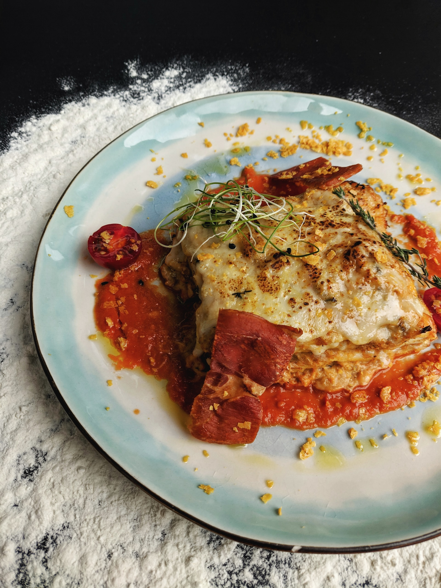

Mexican Lasagna - No Lasagna Noodles!

This is a traditional dish in my family. Anyone can make it really.
It is composed of traditional Mexican ingredients layered over the
top of one another in a lasagna-like fashion (hence the name) but has
little similarity to lasagna, so lasagna haters have no fear!
Ingredients
- 1 ½ pounds ground beef
- ¼ cup water
- 1 (1 ounce) packet taco seasoning mix OR you can make your own here:
- 1 tablespoon chili powder
- 1 ½ teaspoons ground cumin
- 1 teaspoon sea salt
- 1 teaspoon ground black pepper
- ½ teaspoon ground paprika
- ¼ teaspoon garlic powder
- ¼ teaspoon onion powder
- ¼ teaspoon crushed red pepper flakes
- ¼ teaspoon dried oregano
- 12 (8 inch) flour tortillas, or more if needed
- 1 (14 ounce) can refried beans
- 3 cups shredded Colby-Jack cheese
- 1 (8 ounce) jar taco sauce
- 1 cup shredded Colby-Jack cheese
Steps
- Preheat oven to 350 degrees F (175 degrees C). Grease a 9x13-inch casserole dish.
- Heat a large skillet over medium-high heat and stir in ground beef. Cook and stir until
beef is crumbly, evenly browned, and no longer pink, about 10 minutes.
Drain and discard any excess grease. Add water and taco seasoning; cook and stir until
mixture has thickened, 5 to 10 minutes.
- Arrange 3 tortillas in the bottom of the casserole dish; spread about half the can of
refried beans and half the ground beef atop the tortilla layer. Sprinkle 1 cup Colby-Jack
cheese over ground beef layer. Arrange 3 more tortillas over the cheese.
Spread in the remaining 1/2 can refried beans and half the jar of taco sauce;
sprinkle with 1 cup Colby-Jack cheese. Arrange 3 more tortillas and top with remaining ground
beef and 1 cup Colby-Jack cheese. Top with last 3 tortillas and remaining 1/2 jar taco sauce.
- Bake in the preheated oven until top tortilla layer begins to brown, 20 to 25 minutes. Sprinkle 1
cup Colby-Jack cheese over lasagna.
- Turn on oven's broiler.
- Place lasagna under the broiler until Colby-Jack cheese is melted and bubbling, 3 to 5 minutes.